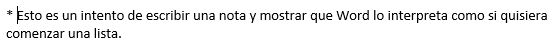

contiene, normalmente, las opciones que más
frecuentemente se utilizan. El primer botón no pertenece realmente a esta barra y al pulsarlo abre
un desplegable con las opciones de restaurar, mover, minimizar, maximizar y cerrar. Los siguientes
botones son Guardar, Deshacer (para deshacer la última acción realizada) y Rehacer (para recuperar
la acción que hemos deshecho). El último botón abre el desplegable para personalzar los botones que
aparecen en esta barra
Barra de título:
Contiene el nombre del documento abierto sobre el que estamos
trabajando, además del nombre del programa y los botones para mimimizar, maximizar o cerrar el programa.
Cinta de opciones:
es el elemento más importante de todos, ya que se trata de una
franja que contiene las herramientas y utilidades necesarias para realizar acciones en Word. Se organiza
en pestañas que engloban categorías lógicas. Para cada pestaña hay una cinta de opciones diferente.
Barras de desplazamiento:
permiten la visualización del contenido que no cabe en la
ventana. Hay una para desplazar el documento de forma vertical y otra de forma horizontal.
Zoom
Al modificar el zoom, podremos alejar o acercar el punto de vista, para apreciar
en mayor detalle o ver una vista general del resultado.
Puedes pulsar directamente el valor porcentual (que normalmente de entrada será el tamaño real, 100%).
Se abrirá una ventana donde ajustar el zoom deseado.
O bien puedes deslizar el marcador hacia los botones - o + que hay justo al lado, arrastrándolo.
Vistas del documento:
definen la forma en que se visualizará la hoja del documento. Por defecto se suele mostrar en Vista de
impresión. Esto significa que veremos el formato de la hoja tal cual se imprimirá. Otros modos son para leer y para diseño web.
Barra de estado:
Muestra información del estado del documento, como el número de páginas y palabras, o el idioma en que se está redactando.
Podremos modificar esta información si hacemos clic sobre ella, ya que normalmente son realmente botones.
Cinta de opciones
La cinta de opciones es la barra más importante de Word, porque contiene todas las opciones que se
pueden realizar con los documentos.
Las herramientas están organizadas en pestañas o fichas (Inicio, Insertar, Vista...),
que a su vez están divididas en grupos
Algunos grupos de herramientas de la cinta disponen de un pequeño botón en su esquina inferior derecha:
Este botón abre un panel o cuadro de diálogo con más opciones relacionadas con el grupo en cuestión.
Observaciones:
Las pestañas pueden estar disponibles o no. La cinta tiene un comportamiento "inteligente", que consiste en
mostrar determinadas pestañas únicamente cuando son útiles, de forma que el usuario no se vea abrumado por una
gran cantidad de opciones. Por ejemplo, la ficha Herramientas de tabla no estará visible de entrada, únicamente
se mostrará si insertamos una tabla en nuestro documento y la seleccionamos.
Ésta función permite una mayor comodidad a la hora de trabajar, pero si en algún momento queremos
ocultar o inhabilitar alguna de ficha de forma manual, podremos hacerlo desde el menú Archivo > Opciones >Personalizar Cinta de opciones,
o pulsando con el botón derecho sobre la cinta de opciones y elegiendo Personalizar Cinta de opciones.
Pulsando la tecla ALT entraremos en el modo de acceso por teclado. De esta forma aparecerán pequeños
recuadros junto a las pestañas y opciones indicando la tecla (o conjunto de teclas) que deberás pulsar para
acceder a esa opción sin la necesidad del ratón.
Mostrar/Ocultar la cinta de opciones.
Si haces doble clic sobre cualquiera de las pestañas, la barra se ocultará, para disponer de más espacio de
trabajo. Las opciones volverán a mostrarse en el momento en el que vuelvas a hacer clic en cualquier pestaña.
También puedes mostrar u ocultar las cintas desde el botón ocultar y mostrar pestañas de la zona derecha
superior que abirá la ventana que se muestra a continuación, con tres opciones:
Ficha archivo
La pestaña Archivo se encuentra destacada en color azul. Porque, a diferencia del resto de pestañas,
no contiene herramientas para la modificación y tratamiento del contenido del documento, sino más bien
opciones referentes a la aplicación y al archivo resultante. Al situarnos en esta pestaña, se cubre el documento
con un panel de opciones, es por ello que Microsoft ha llamado a esta vista la Vista Backstage.
La principal característica de la ficha Archivo es que para cada comando de la parte izquierda aparecen unas
opciones en la parte central, y a su vez, para cada una de estas opciones aparecen otras opciones más en la parte
derecha de la pantalla. Por ejemplo, en la imagen vemos como el comando Abrir genera las opciones Documentos
recientes, SkyDrive, ... y al seleccionar Documentos recientes aparece una lista con varios documentos recientes.
Otra particularidad es la presencia del botón botón atrás
para volver atrás que sólo aparece en la ficha Archivo.
Guardar, abrir y cerrar documentos
Guardar documentos
Lo que se escribe se va almacenando en la memoria de tu ordenador; si apagases el ordenador, se perdería y no lo podrías recuperar.
Con el comando Guardar quedará grabado en el disco duro del ordenador (o en un dispositivo externo, como una memoria usb) de forma permanente.
Haz clic en el icono Guardar de la zona superior izquierda o pulsa las teclas CTRL+G y aparecerá una ventana similar a esta.
Aquí debes elegir en qué unidad guardas el archivo, para guardarlo en el disco duro de tu ordenador selecciona Equipo (más adelante veremos las otras opciones) y pulsa el botón Examinar para que se abra un cuadro de diálogo como el siguiente.
Para guardar un documento debes indicar el nombre con el que lo quieres guardar, el tipo de documento que estás guardando
y la carpeta que contendrá tu documento:
El nombre lo indicamos en el campo Nombre de archivo.
El tipo del documento para los documentos Word será Documento de Word, que ya viene escrito por
defecto.
Observación:
Los documentos dentro del disco duro están organizados en carpetas. Por defecto normalmente
se guardarán en la carpeta Mis documentos. Pero siempre podrás elegir otra carpeta o incluso, como comentábamos,
guardarlo en un disco extraíble.
Una vez hayas definido los tres aspectos, deberás hacer clic en el botón Guardar. La barra de título indicará
el nombre que le hayas dado en lugar de Documento1.
Cerrar documentos
Después de guardar un documento, Este continúa en nuestra pantalla y podemos seguir trabajando con él. Una vez
que hemos acabado de trabajar con un documento debemos cerrarlo.
Para cerrar un documento hacer clic en el botón Archivo , y luego hacer clic en Cerrar. Si hemos hecho alguna
modificación en el documento desde la última vez que lo guardamos, nos preguntará si queremos guardar los
cambios; contestar que Sí. Al cerrar el documento veremos cómo este desaparece de la pantalla y vemos el fondo
gris de la ventana Word. El programa sigue abierto, permitiéndonos crear un nuevo documento o abrir uno
existente.
Abrir un documento
Para utilizar un documento que tenemos guardado debemos abrirlo. Para ello hacer clic en la pestaña Archivo
y seleccionar la opción Abrir, o bien pulsar las teclas CTRL+A. Aparecerá una ventana similar a la que
vemos aquí.
Para abrir un documento de los que se muestran en la columna Documentos Recientes, basta con hacer clic
sobre él. Si el documento que queremos abrir no se encuentra en esa lista podemos hacer clic en Equipo.
Ahí podremos hacer clic en una de las carpetas que se muestran o hacer doble clic sobre el documento que
deseamos abrir.
Para abrir un archivo de los que aparecen en la ventana lo hemos de seleccionar haciendo clic sobre él
(quedará marcado de color azul) y luego pulsar en el botón Abrir. Otra forma más rápida de abrir el documento
es haciendo doble clic sobre él. Inmediatamente el documento aparecerá en nuestra pantalla.
Cerrar Microsoft Word
Una vez hemos acabado de trabajar con Word debemos cerrarlo. Para ello, podemos realizar cualquiera de
las siguients acciones:
Hacer clic en el botón Archivo y eligir la opción Cerrar, como se puede
apreciar en la siguiente imagen:
Utilizar la combinación de teclas rapida para cerrar la aplicación: ALT+F4.
La forma más usual de cerrar el programa es la misma que con la mayoría de ventanas en Windows,
presionar
en la esquina superior derecha del programa:
Mi primer documento en Microsoft Word
Títulos, subtítulos y párrafos
En el documento podemos definir qué texto es el título, cuál el subtítulo, y cuál los párrafos
de contenido. Ésta distinción no es únicamente estética, sino que ayuda a Word a hacerse una idea de la
estructura del documento y esto a la larga nos ayudará en nuestro trabajo. Un documento bien estructurado
siempre es más sencillo de manejar, facilitando por ejemplo la posterior creación de índices.
En la pestaña Inicio > Estilos, encontramos un cuadro que nos permite elegir el tipo de texto que vamos
a introducir.
Si pulsas Título 1 y a continuación escribes algo, se considerará que el texto introducido es un título.
De alguna forma es como etiquetar cada uno de los elementos del archivo.
Al pulsar INTRO, Word asumirá que quieres cambiar de elemento y pasará al formato Normal. Pero siempre puedes
cambiarlo, por ejemplo, para elegir insertar un Título 2 (que supone un nivel más bajo en la jerarquía estructural) para incluir un subtítulo.
Punto de inserción, cursor y puntero
El punto de inserción es una pequeña barra vertical parpadeante (IMAGEN PUNTO DE INSERCION) que
marca tu posición en el texto y donde esté situada es donde se introducirá el texto que teclees. Va avanzando
conforme vayas escribiendo.
El cursor tiene esta forma cuando está dentro del área de texto,
el cursor pr otro lado aparece cuando se está encima de los menús, o fuera del area las reglas.
Observaciones:
No confundas el punto de inserción con el puntero del ratón.
Cuando mueves el ratón, lo que estás moviendo es el puntero; cuando pulsas las teclas de dirección del teclado,
mueves el punto de inserción.
Escribir un primer documento en Word básicamente se trata de teclear el texto y controlar siempre dónde está
situado el punto de inserción.
Saltos de linea
En Word al escribir un texto hay que teclearlo sin más. Los saltos de línea se realizan automáticamente
al llegar al margen derecho. Si quieres realizar un cambio de línea, se utiliza la tecla INTRO
(también llamada ENTER o retorno de carro).
Word se encarga de que el texto que vas introduciendo se contenga dentro de unos márgenes y pasa a la línea inferior
cuando alcanza el margen derecho. Pero conviene saber que, si algún momento quieres realizar un salto de línea de
forma voluntaria, lo puedes hacer con la combinación de teclas MAYÚS+INTRO.
Saltos de página
Los saltos de página se insertan automáticamente cuando llegamos al margen inferior de una página y seguimos escribiendo.
También se pueden insertar de forma manual si queremos pasar a la página siguiente aunque no hayamos llegado al final,
desde la pestaña Insertar > grupo Páginas > opción Salto de página.
Observación:
La herramienta Mostrar todo te permite saber si un texto ha sido dividido en bloques mediante saltos de línea o mediante
párrafos.
Pestaña Inicio > grupo Párrafo.
Si la utilizas, el documento se llenará de marcas como las que ves en la imagen:
Además de los saltos de línea y los cambios de párrafos también se muestran otros símbolos como un punto medio que señala
que hay un espacio separando las palabras, o una marca de salto de página.
Para ocultar de nuevo estas marcas debemos pulsar de nuevo el botón .
Teclas retroceso y suprimir
Cuando cometas un error, y te des cuenta inmediatamente, pulsa la tecla RETROCESO
una vez para que retroceda una posición borrando la última
letra tecleada. Si mantienes la tecla pulsada, seguirá borrando letra tras letra hasta que la sueltes, así que utilízala con cierto cuidado
para controlar su efecto.
Es posible que no te des cuenta del error hasta después de haber escrito unas cuantas letras más. En ese caso no sería factible que borraras
toda la frase por un error que está al principio de la misma. Lo normal es que desplaces el punto de inserción hasta el error y una vez te
hayas situado, utilices el RETROCESO.
Si te das cuenta del error cuando tienes el punto de inserción lejos de él, lo mejor es hacer clic tras la letra que queremos borrar.
La tecla suprimir (DEL o SUPR) también se borra una letra, pero la que queda a la derecha del punto de inserción.
Una de las ventajas que han aportado los procesadores de texto es la facilidad para modificar y corregir. El primer paso en ese proceso es colocarnos en el lugar donde vamos a efectuar la modificación.
Dezplazamiento
Cuando estamos viendo un documento Word que no cabe en una pantalla, necesitaremos movernos por el documento para colocarnos en la parte que nos interese.
Desplazamientos cortos dentro de una misma pantalla:
Ratón: Desplazar el cursor del ratón hasta el punto elegido y hacer clic, el punto de inserción se
colocará en ese lugar.
Teclas de dirección: Las teclas izquierda/derecha desplazan el punto de inserción una posición a la
izquierda/derecha, y las teclas arriba/abajo desplazan el punto de inserción una línea arriba/abajo.
La tecla FIN nos lleva al final de la línea y la tecla INICIO al principio de la línea.
Para desplazarse
Presione las teclas
Una palabra a la izquierda
CTRL + flecha izquierda
Una palabra a la derecha
CTRL + flecha derecha
Un párrafo arriba
CTRL + flecha arriba
Un párrafo abajo
CTRL + flecha abajo
Desplazamientos a lo largo de todo el documento:
Teclas AvPág y RePág. Estas teclas avanzan y retroceden una pantalla completa. Observad que no es lo mismo una
pantalla que una página. El tamaño de la pantalla lo limita el monitor mientras que la longitud de la página
la definimos nosotros.
Para desplazarse
Presione las teclas
Una página adelante
CTRL + AvPág.
Una página atrás
CTRL + RePág.
Al principio del documento
CTRL + Inicio
Al final del documento
CTRL + Fin
Mediante las Barras de desplazamiento
Las barras de desplazamiento permiten movernos a lo largo y ancho del documento de forma gráfica.
La longitud de barra de desplazamiento vertical representa la longitud del documento y el cuadrado
pequeño que hay en su interior representa la posición actual del punto de inserción.
Haciendo clic en cualquier posición por encima/debajo del cuadro nos desplazaremos una pantalla
hacia arriba/debajo del documento.
Arrastrando el cuadro nos desplazaremos proporcionalmente a la posición en la que lo movamos.
Mediante las flechas. Si hacemos clic en la flecha o triángulo de la parte Subir superior/inferior Bajar
nos desplazaremos una línea hacia arriba/abajo. Si mantenemos pulsada la flecha nos desplazaremos línea
a línea de forma rápida hasta que la soltemos.
Las barras de desplazamiento horizontal. Permiten movernos de forma similar a como acabamos de ver con la barra
vertical pero en sentido horizontal, es decir, permiten desplazar el documento hacia la derecha y hacia la izquierda.
Se utilizan menos porque es menos frecuente que el documento sea más ancho de lo que cabe en una pantalla.
Panel de navegación
En la barra de estado, al hacer clic sobre la zona de la izquierda, donde aparece el número de página, se abre un panel de Navegación
similar a la que puedes ver en esta imagen.
Tiene tres pestañas para navegar por:
El índice con los títulos que se generan automáticamente al insertar títulos en el documento.
Haciendo clic en un apartado de ese índice nos desplazaremos a la parte del documento que lo contiene.
Por miniaturas de las páginas.
Por resultados de la búsqueda que hemos realizado utilizando la caja de búsqueda que hay justo encima.
También podemos abrir el panel de navegación desde la pestaña Vista, opción Panel de navegación, como se muestra en la imagen.
Ir a.
Cuando el documento es muy extenso, puede resultar incómodo realizar el desplazamiento de las formas
que hemos visto. Imagina que estás trabajando con un documento de 500 páginas y quieres ir a la página
50. Sería una pérdida de tiempo ir página a página. En esas ocasiones resulta resulta muy practico
utilizar la opción Ir a. Esta opción se encuentra en:
Pestaña Inicio > grupo Edición > menú Buscar.
Tambien podemos emplear la combinación de teclas CTRL + G o bien haciendo clic
en Página ## de ## en la barra de estado
A la izquierda puedes seleccionar dónde quieres ir, y a la derecha especificar el valor.
Por ejemplo Página, elegir un Título, un Comentario, etc.
Selección
Muy frecuentemente en Word es necesario realizar acciones como: copiar, cambiar el formato, etc.,
y para ello tenemos que "decirle" a Word sobre qué parte de texto tiene que actuar; esto es tenemos que
seleccionar el texto.
Las dos maneras mas directas de seleccionar texto es con el ratón y con el teclado:
Ratón
Para seleccionar con el ratón hay dos métodos:
Arrastrando: Colocar el cursor al principio de la selección, presionar el botón izquierdo y,
sin soltar el botón, mover el cursor hasta el final de la selección.
Haciendo clic's:
Colocar el cursor en una palabra y hacer doble clic: la palabra completa quedará seleccionada.
Colocar el cursor justo al inicio de la línea, veremos que el cursor cambia de forma y se convierte
en una flecha , hacer clic y la línea completa quedará seleccionada; si hacemos doble clic, el párrafo
completo quedará seleccionado.
Para seleccionar un gráfico o una imagen basta con hacer clic encima, el gráfico quedará enmarcado
por un recuadro negro.
Teclado
Para seleccionar
Presione las teclas
Un carácter a la derecha
Mayús. + flecha derecha
Un carácter a la izquierda
Mayús. + flecha izquierda
Palabra a la derecha
Ctrl + Mayús.+ flecha derecha
Palabra a la izquierda
Ctrl + Mayús.+ flecha izquierda
Hasta el final de la línea.
Mayús. + Fin
Hasta el principio de la línea.
Mayús. + Inicio
Una línea abajo
Mayús. + flecha abajo
Una línea arriba
Mayús. + flecha arriba
Hasta el final del párrafo
Ctrl + Mayús. + flecha abajo
Hasta el principio del párrafo
Ctrl + Mayús. + flecha arriba
Una pantalla abajo
Mayús. + AvPág
Una pantalla arriba
Mayús. + RePág
Hasta el final del documento
Ctrl + E
Opción Seleccionar.
En la pestaña Inicio > grupo Edición > opción Seleccionar.
Eliminar
Para borrar o eliminar lo seleccionado basta con presionar la tecla SUPR, otra forma de borrar sin seleccionar previamente
es utilizando las teclas, como se indica en la siguiente tabla:
Para borrar
Presione las teclas
Un carácter a la izquierda
Retroceso (BackSpace)
Una palabra a la izquierda
Ctrl + Retroceso
Un carácter a la derecha
Supr
Una palabra a la derecha
Ctrl + Supr
Observación:
Para borrar una palabra errónea basta con hacer doble clic sobre ella
para seleccionarla y pulsar la primera letra de la palabra correcta, automáticamente se borrará la
palabra seleccionada y podremos seguir escribiendo en su lugar la palabra correcta.
Deshacer y rehacer
La última acción realizada.
Las últimas acciones realizadas.
Rehacer.
Repetir formato.
Copiar, cortar y pegar
Ratón
Teclado
Opciones para pegar texto
Buscar y reemplazar
Simbolos
Insertar texto no tiene secreto, únicamente hay que escribirlo, pero ¿qué ocurre si queremos insertar
algún símbolo o un carácter especial? ¿O si queremos insertar ecuaciones matemáticas?
Insertar > grupo Símbolos.
El botón Ecuación nos permitirá acceder a una herramienta específica que facilita la inserción de ecuaciones
En cambio con el botón Símbolo, accederemos a caracteres especiales como símbolos monetarios, el símbolo del
copyright o de registro, etc.Puedes hacer clic en Más símbolos,
para ver un catálogo mas completo de símbolos:
Al hacer doble clic sobre un símbolo, o seleccionarlo y pulsar el botón Insertar,
se incluirá en el documento, donde esté situado el punto de inserción. La ventana no se cerrará hasta que presiones
Cancelar o Cerrar, esto permite insertar varios símbolos sin tener que abrir cada vez la ventana.
Los símbolos disponibles dependen del tipo de fuente que se utilice, por ello podrás cambiar la fuente en el desplegable
Fuente de la parte superior. Luego, podremos seleccionar en desplegable Subconjunto el tipo de símbolo que buscamos, para
filtrar el resultado.
Observación:
Si un símbolo lo utilizas con regularidad, selecciónalo y observa las teclas que lo insertan
automáticamente en la zona inferior. Esta combinación, la puedes cambiar por otra desde el botón .
Nota
A veces Word realiza acciones sin previo aviso ni autorización. Por ejemplo:
Si intentas escribir una nota en el texto y empiezas un párrafo con el asterisco "*"" y a continuación un espacio y texto:

Word automáticamente dará por sentado que lo que quieres hacer es crear una lista, y que estás utilizando el asterisco
como viñeta:
Podemos pulsar el pequeño icono flotante
en forma de rayo que aparece junto al texto. Al hacerlo se desplegará
un menú que nos permitirá deshacer la acción de Word si va en contra de nuestros intereses.
Observación:
Es imporartante aclara que Word no sirve únicamente para introducir texto. Se puede insertar imagenes, tablas,
gráficos y muchos otros objetos que enriquecerán el documento.
Vistas
Con la barra inferior puedes cambiar la forma en que visualizas el documento, o lo que es lo mismo,
la vista
Vistas Desde esta barra tenemos acceso a las vistas Modo lectura, Diseño de impresión
y Diseño web.
Para acceder a todas las vistas: pestaña Vista > grupo Vistas de documento.
Diseño de impresión
En esta vista se pueden aplicar formatos y realizar la mayoría de las tareas habituales.
Es la vista predeterminada. Se ve tal y como se imprimirá, con gráficos, imágenes, encabezados
y pies de página, etc.
Modo lectura
Esta vista permite visualizar la página de una forma muy limpia, con pocos elementos para
facilitar la lectura. Si el espacio de la pantalla lo permite, muestra dos páginas por pantalla.
En esta vista no se ven los encabezados y pies de página.
Esta pantalla de lectura tiene las siguientes tres características:
Cuando tenemos la pantalla maximizada, ocupando todo el espacio, se mantiene una pantalla
con los mínimos elementos para que la lectura sea más cómoda.
En la parte izquierda y derecha tiene unas flechas para retroceder y avanzar página.
En la parte inferior la barra de estado cambia el diseño como muestra la siguiente imagen:
Tiene un botón blanco que permite desplazarse rápidamente por todo el documento y en la barra
de estado desaparecen las indicaciones del idioma y del número de palabras.
Observación:
Cuando cerramos un documento en modo lectura y lo volvemos a abrir más
tarde, Word nos muestra un aviso por si queremos volver al punto exacto donde dejamos el documento.
Basta con hacer clic en
para ir al punto donde habíamos dejado la lectura la última vez. Pasados unos segundos, el aviso se hace
más pequeño .
Si no haces clic en el aviso, este desaparece al poco tiempo.
Diseño Web
Se utiliza para ver el aspecto de un documento Web tal y como se vería desde un navegador como Internet
Explorer o Firefox si lo publicáramos.
Esquema
En esta vista se puede observar y editar la jerarquía de los apartados que conforman el
documento. Profundizaremos en esta vista a lo largo del curso.
Borrador
En esta vista se optimiza el tamaño de la hoja y de las fuentes, para facilitar la lectura en pantalla.
Se muestra con la misma longitud de línea que en la versión impresa, pero elimina elementos como los encabezados o pies
de página, que suelen ser más retoques para la publicación que contenido útil en un borrador.
Vista
Ver varios documentos a la vez
En la pestaña Vista encontramos el grupo Ventanas, que nos ayudará a decidir cómo organizar las
ventanas de Word en caso de que estemos trabajando con más de un documento a la vez.
El botón Cambiar ventanas despliega un menú con el nombre de cada uno de los documentos abiertos, permitiéndonos
elegir cuál queremos ver en primer plano.
Al pulsar el botón Organizar todo se situará un documento sobre el otro, permitiéndote ver los dos de forma simultánea.
Solo una de las ventanas es la ventana activa: la que tiene la barra de título más coloreada. En el ejemplo de la imagen,
la inferior.
Para hacer que una ventana se convierta en la ventana activa basta con hacer clic dentro del área de la ventana.
Podemos variar el tamaño y la posición de cada ventana a nuestro gusto:
Para modificar el tamaño hay que situar el cursor en el borde de la ventana y arrastrarlo cuando tome forma de
flecha bidireccional. Los bordes superior e inferior alterarán la altura, los bordes laterales la anchura y las esquinas ambas.
Para cambiar la posición, arrastra la ventana desde su barra de título.
Dividir pantalla
Podemos crear una línea de separación dentro de un mismo documento, pudiendo utilizar la zona superior y la inferior de
forma independiente y trabajar con ellas como si de un duplicado se tratase. Esta opción es especialmente útil en documentos
extensos en que necesitamos ver dos partes del mismo a la vez constantemente, pero que distan mucho entre sí. Así nos
evitamos tener que ir cambiando de página una y otra vez.
Encontraremos esta herramienta en pestaña Vista > grupo Ventanas > Dividir
Cuando hayamos incluido una división, el botón se convertirá en Quitar división y al pulsarlo de nuevo
la podremos eliminar.
Ortografía y gramática
La revisión ortográfica y gramatical es otra de las grandes aportaciones de los procesadores de texto.
Particularmente, Word dispone de potentes herramientas en este campo que han sido mejoradas notablemente desde
las primeras versiones.
Evitar que haya errores en nuestros textos es ahora mucho más fácil. No obstante conviene saber que revisar
un documento y que Word no encuentre ningún error no quiere decir que, necesariamente, sea así. Ya que hay
errores que Word no puede detectar puesto que dependen del contexto. La forma que tiene Word para detectar
las palabras erróneas es comprobar si las palabras de nuestro documento existen en el diccionario que lleva
incorporado, junto con algunas reglas gramaticales. Lo que no es capaz de hacer Word, por el momento, es
discernir el significado de las palabras en cada contexto.
Ejemplo:
La revisión ortográfica consiste en comprobar que las palabras de nuestro texto no son erróneas y
la revisión gramatical trata de que las frases no contengan errores gramaticales como por ejemplo
"Los libros son buenas"; donde no concuerdan el género del sujeto y del adjetivo. Obviamente Word realiza
mejor la revisión ortográfica, porque únicamente debe contrastar con los diccionarios. Por eso es importante
que prestemos especial atención a los posibles fallos gramaticales, que al depender del contexto, son más
difíciles de identificar para el programa.
Podemos realizar una revisión ortográfica, una gramatical o ambas a la vez
Revisar mientras se escribe
De forma predeterminada, Word irá subrayando con una línea ondulada las palabras que considere que contienen
errores ortográficos en rojo y las que considere que contienen errores gramaticales en azul. Lo hará a medida
que vayamos escribiendo, sin necesidad de solicitar la revisión de forma expresa. Word no podrá detectar
errores gramaticales hasta que la frase esté acabada, por ejemplo, con un punto.
Ejemplo:
Ortografía
Para corregir el error debemos colocar el cursor sobre palabra subrayada y pulsar el botón derecho del ratón.
Entonces aparecerá el menú contextual que nos permitirá elegir una de las palabras sugeridas.
Además de las palabras sugeridas, en el menú contextual encontramos otras opciones interesantes:
Omitir todo: En ocasiones el corrector se equivoca, o simplemente estamos utilizando nombres
propios o marcas que no están incluidos en el diccionario. En tal caso, deberemos omitir el error. Si queremos
que no vuelva a identificar esta palabra como un error a lo largo del documento, deberemos seleccionar Omitir
todas. Los fallos gramaticales se basan en que la palabra en sí no tiene ningún error, el error es producido
por su dependencia con el contexto, por ese motivo, no podremos omitir todas, sino que deberemos Omitir una vez.
Sin embargo esta opción no aparece en el menú contextual, para poder usarla deberemos abrir el panel Ortografía
pulsando F7, que explicaremos un poco más adelante.
Agregar al diccionario: Añade la palabra subrayada al diccionario personalizado y no la volverá a mostrar subrayada.
Podemos agregar palabras al diccionario si estamos seguros de su existencia. Por ejemplo, términos científicos que no suelen estar contemplados.
O bien, por motivos prácticos. Si utilizamos constantemente el nombre de nuestra empresa y siempre presenta problemas,
lo más práctico es incluirlo en el diccionario, para no tener que omitirlo en cada uno de los documentos.
Gramática
En nuestro ejemplo la palabra sugerida frente al error gramatical es Este, con lo que la frase quedaría "Este autobús ... "
Omitir una vez:
Gramática
Abre el panel de gramática que veremos a continuación.
Observación: Tener activada la opción de revisar mientras se escribe puede causar que, en documentos extensos,
la carga del documento resulte lenta. Ésto se debe a que, al abrir el archivo, se revisará automáticamente todo su contenido
Panel ortografía/gramática.
Si no queremos ir cambiando cada una de las palabras manualmente, podemos recurrir a forzar la revisión una vez
hayamos terminado de escribir.
Lo podemos realizar desde la pestaña Revisar > grupo Revisión > opción Ortografía y gramática, o bien pulsando la tecla F7.
Word comenzará a efectuar la revisión ortográfica y cuando encuentre un posible error se detendrá y lo mostrará en el panel
Ortografía o en el panel Gramática para que escojamos la opción más correcta, de forma similar a como acabamos de ver con el
menú contextual, la diferencia es que en el panel hay más opciones disponibles.
Margenes
En Word, todas las páginas tienen automáticamente un margen de una pulgada. Se puede personalizar la configuración
de márgenes o elegir una predefinida. También se pueden establecer márgenes de páginas opuestas, dejar espacio de
márgenes adicional para la encuadernación de documentos y cambiar el modo en que se miden los márgenes.
En el grupo Configurar página de la pestaña Diseño de página, elija Márgenes y aparecerá la galería Márgenes.
Elija el tipo de margen que quiera aplicar.
Establezca la nueva configuración de márgenes como predeterminada para la plantilla. Cada nuevo documento que se base en esa plantilla
usará automáticamente la nueva configuración de márgenes.
Después de seleccionar un nuevo margen, elija Márgenes y luego Márgenes personalizados.
En el cuadro de diálogo Configurar página, elija Establecer como predeterminado.
Observación:
Si el documento contiene varias secciones, el nuevo tipo de margen solo se aplicará a la sección
actual. Para aplicar el nuevo tipo de margen a varias secciones, asegúrese de seleccionarlas todas.
En el grupo Configurar página de la pestaña Diseño de página, elija Márgenes y aparecerá la galería Márgenes.
En la parte inferior de la galería Márgenes, elija Márgenes personalizados.
En el cuadro de diálogo Configurar página, especifique nuevos valores para los márgenes.
Otras sugerencias sobre márgenes
Para cambiar los márgenes de una sección de un documento, seleccione el texto y establezca los nuevos
márgenes en el cuadro de diálogo Configurar página. En el cuadro Aplicar a, haga clic en Texto seleccionado.
Microsoft Word inserta automáticamente saltos de sección antes y después del texto con la nueva configuración
de márgenes.
La mayoría de las impresoras requieren un ancho mínimo para la configuración de márgenes. Si los márgenes son
demasiado estrechos, Microsoft Word muestra el mensaje Uno o más márgenes están establecidos fuera del área
imprimible de la página. Haga clic en Arreglar para aumentar el ancho de los márgenes automáticamente.
Si omite el mensaje, Word muestra otro mensaje que le pregunta si quiere continuar.
La configuración del margen mínimo de impresión depende de la impresora, el controlador de la impresora y
el tamaño del papel. Para obtener información sobre la configuración de márgenes mínimos, consulte el manual
de la impresora.
Utilice márgenes simétricos para configurar páginas opuestas en documentos de doble cara, como libros o revistas.
Cuando se eligen márgenes simétricos, los márgenes de la página izquierda son una imagen reflejada de los de la
página derecha. Los márgenes interiores tienen el mismo ancho y los márgenes exteriores tienen el mismo ancho.
En el grupo Configurar página de la pestaña Diseño de página, haga clic en Márgenes > Reflejado.
Observación:
Nota: Para cambiar el ancho de márgenes, haga clic en Márgenes personalizados en la parte
inferior de la galería Márgenes. Escriba nuevos valores en los cuadros Interior y Exterior.
Un margen de encuadernación agrega espacio adicional al margen lateral, al margen superior o a los márgenes
internos del documento que tiene pensado encuadernar. De esa manera, el texto no quedará oculto con la
encuadernación.
Márgenes de medianil para encuadernación
Márgenes simétricos en páginas opuestas
Para establecer el margen de medianil
En la pestaña Diseño de página, en el grupo Configurar página, haga clic en Márgenes.
Haga clic en Márgenes personalizados.
En el cuadro Medianil, escriba un valor para el ancho del margen de medianil.
En el cuadro Posición de medianil, haga clic en Izquierda o en Superior.
Nota: El cuadro Posición de medianil no está disponible cuando se utiliza la opción Márgenes simétricos,
Dos páginas por hoja o Formato libro. Para esas opciones, la posición del margen interno se determina automáticamente
Word puede mostrar líneas en el documento que representen los límites del texto.
En la pestaña Archivo, haga clic en Opciones.
Haga clic en Avanzadas y, en Mostrar contenido de documento, active la casilla Mostrar límites de texto.
Los márgenes de página aparecen en el documento como líneas de puntos.
Nota: Puede ver los márgenes de página en la vista de diseño
de impresión o la vista de diseño web. Los límites de texto no aparecen en la página impresa.
El portapapeles
El Office portapapeles almacena texto y gráficos que copia o corta desde cualquier lugar y le permite pegar
los elementos almacenados en cualquier otro archivo Office archivo. Esta es la manera en que funciona en Word
2013 o 2016.
El Portapapeles de Office le permite copiar hasta 24 elementos de documentos de Office u otros programas y
pegarlos en otro documento de Office. Por ejemplo, puede copiar texto de un mensaje de correo electrónico,
datos de un libro u hoja de datos y un gráfico de una presentación y luego pegarlos todos en un documento.
Al usar el Portapapeles de Office, puede organizar los elementos copiados de la forma que desee en el documento.
Con el panel de tareas Portapapeles no solo puede pegar el último elemento copiado o cortado.
El panel de tareas Portapapeles guarda muchas de las últimas imágenes y texto que copió o pegó.
Parrafos: Sangria, espaciado entre parrafos e interlineado
Puede controlar el espacio vertical entre las líneas de texto en el documento mediante la configuración del interlineado.
O bien, puede cambiar el espacio vertical entre los párrafos del documento estableciendo el espaciado antes o después de los párrafos.
También puede elegir conservar líneas de texto o párrafos juntos en una página.
El cuadro de diálogo Párrafo contiene opciones generales de sangría y espaciado. En la parte inferior del cuadro de diálogo hay una vista previa
del aspecto que tendrán las opciones antes de aplicarlas.
General
Alineación
Elija Izquierda para alinear el texto a la izquierda con un borde derecho irregular (o use el método abreviado de teclado CTRL+L).
Elija Centrar para centrar el texto con bordes irregulares a la izquierda y la derecha (CTRL+E).
Elija Derecha para alinear el texto a la derecha con un borde izquierdo irregular (CTRL+R).
Elija Justificar para alinear el texto a la derecha y la izquierda, y para agregar un espacio entre palabras (CTRL+J).
Nivel de esquema
Es el nivel donde se muestra el párrafo en la vista Esquema.
Elija Contraído de forma predeterminada si quiere que el documento se abra con los encabezados contraídos de forma predeterminada. Consulte Contraer o expandir partes de un documento para obtener más información.
Sangría
Izquierda
Aplica sangría al párrafo a la izquierda la cantidad que indique.
Derecha
Aplica sangría al párrafo a la derecha la cantidad que indique.
Especial
Elija Primera línea > Por para aplicar sangría a la primera línea de un párrafo. Para crear rápidamente una sangría de primera línea con la regla, consulte Crear una sangría de primera línea.
Elija Sangría francesa > Por para crear una sangría francesa. Para crear rápidamente una sangría francesa con la regla, consulte Crear una sangría francesa.
Sangrías reflejadas
Al seleccionar esta opción, Izquierda y Derecha se convierten en Dentro y Fuera. Se utiliza para la impresión estilo libro.
Espaciado
Antes
Ajusta la cantidad de espacio antes de un párrafo.
Después
Ajusta la cantidad de espacio después de un párrafo.
Elija 1,5 líneas para cambiar el interlineado del texto a 1,5 líneas.
Elija Doble para texto de espaciado doble. Para cambiar rápidamente a espaciado doble todo el documento, vea Aplicar espacio doble a un documento.
Elija Mínimo > En para establecer la cantidad mínima de espaciado necesaria para albergar la fuente o gráfico de mayor tamaño en la línea.
Elija Exactamente > En para establecer el interlineado fijo, expresado en puntos. Por ejemplo, si el texto está en una fuente de 10 puntos, puede especificar 12 puntos como interlineado.
Elija Múltiple > En para establecer el interlineado como un múltiplo expresado en números mayores que 1. Si establece el interlineado como 1,15 se aumentará el espacio en un 15 %; si establece el interlineado en 3, se aumentará el espaciado en un 300 % (espaciado triple).
No agregar
Elija No agregar espacio entre párrafos si no quiere agregar espacio adicional entre párrafos.
Vaya a Diseño > espaciado entre párrafos.
Elija una opción. Para agregar un espacio único al documento, seleccione Sin espacio de párrafo.
Para volver a la configuración original más adelante, vaya a Diseño > espaciado entre párrafos y elija la opción en Conjunto de estilos.
Puede ser Predeterminado o el nombre del estilo que está usando actualmente.
Seleccione uno o varios párrafos para actualizar. Presione Ctrl + A para seleccionar todo.
Vaya a Inicio > espacio entre líneas y párrafos Botón Espaciado entre líneas y párrafos
Seleccione Opciones de interlineado y elija una opción en el cuadro Interlineado.
Ajuste la configuración antes y después para cambiar el espaciado entre párrafos.
Seleccione Aceptar.
Bordes y sombreado
Tabulaciones
Numeracion y viñetas
Fuentes
Tipos de letra
Negritas
Color de fuente
Insertar
Número de página
Secciones
Tablas
Encabezado y pie de pagina
Ilustraciones, objetos, etc
Combinaciones de correspondencia
Configuraciones de página e impresión
Tablas de contenido
Indices
Referencias cruzadas
Por posiciones
A ilusatraciones
Arriba y abajo
Notas al pie y notas al final
Citas bibliográficas
Insertar tablas, ilustraciones, graficos
Control de cambios
Al trabajar en un documento con otras personas o al editar un documento usted mismo,
active Control de cambios para ver todos los cambios. Word marca todas las adiciones, las eliminaciones,
los movimientos y los cambios de formato.
Abra el documento que desea revisar.
Haga clic en Revisar y, en el botón Control de cambios, seleccione Control de cambios.
Al hacer clic en el botón Control de cambios, se resaltan las opciones disponibles.
Dar formato al texto
Dar formato al texto
Seleccione el texto al que desee aplicar formato.
Para seleccionar una única palabra, haga doble clic en ella. Para seleccionar una línea de texto,
haga clic en el lado izquierdo de la línea.
Seleccione una opción para cambiar la fuente, el tamaño de fuente, el color de fuente o poner el texto en negrita,
cursiva o subrayado.
Copiar formato
Seleccione el texto con el formato que quiera copiar.
Haga clic en Copiar formato Copiar formato y, después, seleccione el texto al que quiera copiar el formato.
Sugerencia: Para copiar el formato en más de un lugar, haga doble clic en Copiar formato.


 para volver atrás que sólo aparece en la ficha Archivo.
para volver atrás que sólo aparece en la ficha Archivo.
 de la zona superior izquierda o pulsa las teclas CTRL+G y aparecerá una ventana similar a esta.
de la zona superior izquierda o pulsa las teclas CTRL+G y aparecerá una ventana similar a esta.

 y seleccionar la opción Abrir, o bien pulsar las teclas CTRL+A. Aparecerá una ventana similar a la que
vemos aquí.
y seleccionar la opción Abrir, o bien pulsar las teclas CTRL+A. Aparecerá una ventana similar a la que
vemos aquí.
 en la esquina superior derecha del programa:
en la esquina superior derecha del programa: 


 una vez para que retroceda una posición borrando la última
letra tecleada. Si mantienes la tecla pulsada, seguirá borrando letra tras letra hasta que la sueltes, así que utilízala con cierto cuidado
para controlar su efecto.
una vez para que retroceda una posición borrando la última
letra tecleada. Si mantienes la tecla pulsada, seguirá borrando letra tras letra hasta que la sueltes, así que utilízala con cierto cuidado
para controlar su efecto.
 también se borra una letra, pero la que queda a la derecha del punto de inserción.
también se borra una letra, pero la que queda a la derecha del punto de inserción. nos desplazaremos una línea hacia arriba/abajo. Si mantenemos pulsada la flecha nos desplazaremos línea
a línea de forma rápida hasta que la soltemos.
nos desplazaremos una línea hacia arriba/abajo. Si mantenemos pulsada la flecha nos desplazaremos línea
a línea de forma rápida hasta que la soltemos.


 ,
para ver un catálogo mas completo de símbolos:
,
para ver un catálogo mas completo de símbolos:

 .
.


 Vistas Desde esta barra tenemos acceso a las vistas Modo lectura, Diseño de impresión
y Diseño web.
Vistas Desde esta barra tenemos acceso a las vistas Modo lectura, Diseño de impresión
y Diseño web.